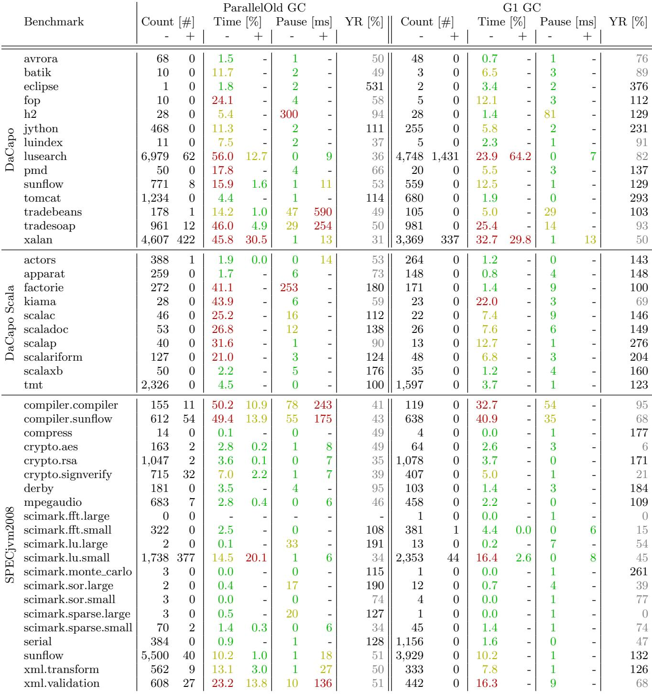
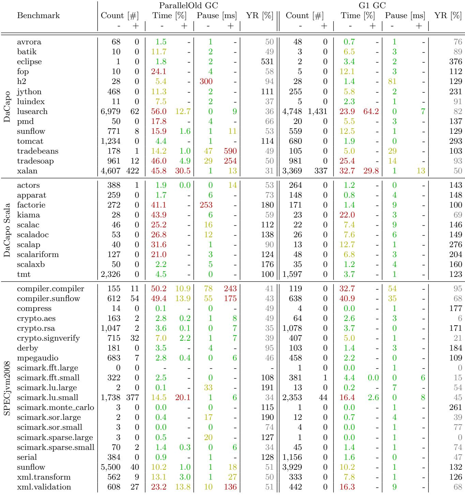

A Comprehensive Java Benchmark Study on Memory and Garbage Collection Behavior of DaCapo, DaCapo Scala, and SPECjvm2008 通俗讲解¶
0. 整体创新点通俗解读¶
痛点直击 (The "Why")
- 这篇论文要解决的根本问题，不是某个具体技术的缺陷，而是整个Java性能研究领域的“基准盲区”。
- 以前的研究者在评估新的JVM、GC算法或编译器优化时，会直接拿DaCapo、SPECjvm2008这些“标准答案”来跑分。但他们心里其实没底：这些基准套件里的程序，在今天的现代JVM（比如HotSpot with G1 GC）上，到底表现如何？它们的内存行为和GC特征还是十年前论文里描述的那样吗？
- 这就导致了一个很“难受”的局面：你可能在一个只产生短命小对象的基准上证明了你的新GC算法天下无敌，但一放到一个像
derby这样会产生大量长寿命对象的真实应用里就原形毕露。更糟的是，如果别人用的基准恰好有lusearch这种用异常做控制流的“奇葩”，你的监控工具因为要处理海量堆栈跟踪而性能暴跌，这锅该谁背？没有对基准本身的深刻理解，任何性能比较都可能是空中楼阁，甚至是误导。
通俗比方 (The Analogy)
- 想象你要测试一辆新车的性能。以前大家默认去几个“标准赛道”跑圈，比如F1赛道、纽博格林北环。但问题是，这些赛道十年前铺的沥青，现在早就老化了；而且车也从燃油车变成了电动车，抓地力、动力输出特性完全不同了。如果你还拿着十年前的赛道报告说“这车在北环能跑7分30秒”，那这个数据对今天的新车来说几乎毫无意义。
- 这篇论文干的事，就是亲自开着当今市面上所有主流的新车（现代JVM），重新丈量一遍这些“标准赛道”（基准套件）。它告诉你：这条赛道现在有几个急弯（高GC频率）、那段路特别颠簸（长GC暂停）、还有个地方居然有个隐藏的减速带（用异常做控制流）。有了这份全新的、精准的“赛道地图”，以后无论是造车的（JVM开发者）、改装车的（工具开发者）还是赛车手（研究人员），都能做出更明智的决策。
关键一招 (The "How")
- 作者的核心贡献不是提出一个新算法，而是进行了一次系统性、高保真的“基准画像”。为了做到这一点，他们最关键的一步是解决了观测本身会扭曲结果的难题。
- 传统的内存分析工具（比如基于JVMTI或字节码插桩的）开销太大，会显著改变程序的运行时行为，尤其是GC的行为，这就形成了一个悖论：你想观察真实的GC，但你的观察行为本身就改变了GC。
- 作者没有用外部工具，而是采用了他们自己研发的 AntTracks。这是一个深度集成到HotSpot VM内部的特殊版本。它通过在VM源码层面直接、高效地记录内存事件，将观测开销降到了仅4%，从而获得了前所未有的真实数据。
- 基于这份真实数据，他们系统地测量并分类了三大主流基准套件（DaCapo, DaCapo Scala, SPECjvm2008）中每个程序的核心特征：
- 总分配量和分配速率：哪些是“内存喷射机”（如
factorie,sunflow）。 - 对象布局：哪些爱用大数组（SPECjvm2008普遍如此）。
- 代码执行状态：哪些程序居然大部分对象是在解释执行或C1编译的代码里分配的（如
scimark系列），说明它们根本没热身好。 - GC行为细节：包括GC次数、总GC时间、暂停时间，并且对比了ParallelOld GC和G1 GC这两种主流收集器的表现差异。
- 奇特行为：揪出了
lusearch和pmd这种滥用异常填充堆栈跟踪的“反面典型”。
- 总分配量和分配速率：哪些是“内存喷射机”（如
 

总而言之，这篇论文的价值在于提供了一份权威、可靠、细致入微的“基准使用指南”。它告诉研究社区：当你下次想证明你的新GC算法有多快时，请先看看这张地图，选对真正能考验你算法的“赛道”，而不是随便找个平坦的停车场就宣布自己赢了。
1. AntTracks Memory Monitoring Tool¶
痛点直击
- 传统的 Java 内存监控工具（比如基于 JVMTI 或 Java Agent 的）通常通过 字节码插桩 (Bytecode Instrumentation) 来追踪对象分配。这招在原理上很直接，但副作用巨大：
- 它会彻底破坏 JIT 编译器的优化，尤其是 Escape Analysis（逃逸分析）。一旦 JIT 认为一个对象不会逃逸出当前方法，它就会把这个对象从堆上“挪”到栈上分配（Scalar Replacement），甚至直接优化掉。插桩会让 JIT 认为所有对象都“逃逸”了，从而强制所有对象都走昂贵的堆分配，性能暴跌。
- 为了追踪对象死亡，很多工具会滥用 WeakReference 或 finalize()。这会给 Garbage Collector (GC) 带来额外的巨大负担，因为 GC 必须对这些特殊对象进行额外的处理，严重扭曲了真实的 GC 行为。
- 最终结果就是，你越想精确地观察程序，你的观察行为本身就把程序的行为完全改变了，得到的数据根本不能反映真实情况。这就是论文里提到的 Observer Effect (观察者效应)。
通俗比方
- 想象你要研究一个精密钟表内部齿轮的运转。传统方法是打开表盖，用镊子夹住每个齿轮，在上面贴个微型传感器。但这个操作本身就会让齿轮卡住、摩擦力变大，钟表要么走不准，要么直接停了。你看到的不是它本来的样子。
- AntTracks 的做法完全不同。它就像是在制造钟表的时候，就让每个齿轮自己带了一个微型的、几乎不耗电的记录仪。这个记录仪只在齿轮转动时，用最精简的密码记下“我动了”这件事。等钟表运行完，你再把所有记录仪的数据汇总起来，就能完美复原整个过程，而钟表在整个过程中完全感觉不到被监控，运转如常。
关键一招
- 作者没有在 JVM 外部做任何事情，而是直接把监控逻辑“编织”进了 HotSpot VM 的源代码里。这是一个根本性的思路转变：从“外部观察者”变成了“内部知情者”。
- 具体来说，他们在 VM 的内存分配器 (Allocator) 和 GC 核心模块中，植入了极其轻量级的事件记录点。
- 当 VM 本身要分配一个对象时，它顺手就记下一条日志。
- 当 GC 执行回收、移动对象等操作时，它也顺手记下相应的日志。
- 这些日志采用了高度定制化、极度紧凑的二进制格式，只记录最核心的信息（比如对象地址、大小、类型、GC 事件类型），省略一切可以事后推断的冗余数据。
- 最后，一个离线的后处理工具 (Offline Post-processor) 会读取这个紧凑的日志流，并利用 VM 的内部知识（比如类元数据）将日志“解压”和“重建”成完整的、可供分析的对象生命周期轨迹。
- 正是这种 “VM 内部集成 + 高效日志 + 离线重建” 的三段式设计，让它避开了所有传统工具的性能陷阱，实现了 ~4% 的超低开销，同时保证了100% 的追踪完整性。
2. Benchmark Categorization by Memory/GC Behavior¶
痛点直击
- 以前的研究者选 Java Benchmark 就像闭着眼睛抓阄。大家只知道 DaCapo、SPECjvm2008 这些名字，但对它们内部的 内存行为 和 GC 行为 几乎一无所知。
- 这导致两个严重问题：
- 评估失真：你拿一个 GC 压力极小的 benchmark（比如
scimark.fft）去测试一个新 GC 算法，结果当然“很好”，但这完全没意义，因为它根本没触发 GC。 - 归因困难：如果你的优化在
lusearch上效果奇差，你可能会以为是自己算法的问题，而实际上是因为lusearch用 Exception 做控制流，产生了海量无用的栈跟踪对象，这本身就是个“病态”场景。
- 评估失真：你拿一个 GC 压力极小的 benchmark（比如
通俗比方
- 这篇论文干的事，就像是给一堆性格迥异的“病人”做了一次全面体检，并给他们贴上了精准的标签。
- 以前的 benchmark 就像一群匿名志愿者，你只知道他们叫“A”、“B”、“C”。现在作者告诉你：
- “A 号病人（
factorie）是个 重度肾虚（超高 总分配量），一天要过滤上百升血液（137GB 内存）。” - “B 号病人（
derby）是个 急性子（超高 分配速率），但他的血细胞（对象）死得也快。” - “C 号病人（
h2）浑身都是 神经末梢（超高 指针密度），牵一发而动全身。”
- “A 号病人（
- 有了这份“病历”，你再想测试新药（比如一个新的 GC 算法），就知道该找哪个病人了。想测耐力就找 A，想测反应速度就找 B。
关键一招
- 作者并没有发明新的 benchmark，而是用一个超低开销的工具 AntTracks，对现有 benchmark 进行了一次“解剖级”的观测。
- 他们提取了几个核心维度作为分类依据，把 benchmark 分门别类：
- 压力维度：看 总分配量 (Total Allocations) 和 分配速率 (Allocation Rate)。这决定了你的 GC 会不会被“累死”。
- 生存维度：看 Live Set Size (活集大小) 和 Young Generation Ratio (新生代比率)。这能看出对象是“朝生暮死”还是“寿终正寝”。
- 停顿维度：看 GC Count (GC 次数)、GC Time (GC 时间占比) 和 Pause Times (暂停时间)。这对实时性要求高的系统至关重要。
- 通过这套分类法，研究者可以按图索骥。例如，论文明确指出：
- 想测试 分配器或监控工具的开销？选
factorie、serial这种 总分配量 巨大的。 - 想测试 GC 的并发能力或停顿优化？选
tmt、sunflow这种 GC 时间占比 超过 50% 的。 - 想研究 指针密集型应用？直接上
h2或xalan。
- 想测试 分配器或监控工具的开销？选
3. VM-Internal Allocation Analysis¶
痛点直击 (The "Why")
- 以前做 Java 性能分析时，大家通常只关心“应用代码”自己 new 了多少对象。但现代 JVM 是个黑盒，它内部也会偷偷分配大量内存（比如填栈跟踪、类加载、GC 填充等），这些 VM-Internal Allocation 往往被忽略。
- 这会导致两个严重问题：
- 误判 Warmup 质量：你以为 JIT 已经把热点代码全编译好了，结果发现还有大量对象是从 interpreted code 分配的——说明根本没热起来！
- 掩盖真实瓶颈：像 lusearch 和 pmd 这类 benchmark，90% 以上的“异常开销”其实来自
Throwable.fillInStackTrace()这种 VM 内部操作，而非业务逻辑。如果你不知道这点，可能会花几周去优化根本无关的代码。
 Figure 3: Objects allocated by VM-internal code, interpreted code, C1 compiled code, or by C2 compiled code respectively (green: 1st top allocator, yellow: 2nd top allocator, red: 3rd top allocator), as well as the time spent compiling in relation to the overall run time
Figure 3: Objects allocated by VM-internal code, interpreted code, C1 compiled code, or by C2 compiled code respectively (green: 1st top allocator, yellow: 2nd top allocator, red: 3rd top allocator), as well as the time spent compiling in relation to the overall run time
通俗比方 (The Analogy)
- 这就像你请了个装修队（JVM）来翻新房子（运行程序）。你只盯着他们用掉多少瓷砖和木板（应用分配的对象），却完全没注意：
- 工人自己带的工具箱（VM 内部结构）占了半间房；
- 每次出错都要手写一份事故报告（fillInStackTrace），光纸就堆成山；
- 有些活儿还是学徒工（interpreter）干的，效率极低，而老师傅（C2 compiler）根本没上手。
- 如果你不区分“谁在干活、用什么工具”，就无法判断到底是材料不够，还是工人没到位。
关键一招 (The "How")
- 作者并没有依赖传统的 JVMTI 或字节码插桩（这些会严重干扰 GC 行为），而是用了自家研发的 AntTracks 工具——一个直接嵌入 HotSpot VM 内核的轻量级追踪器。
- 它的核心 trick 是：在 GC 执行时同步记录对象来源的执行上下文。具体来说：
- 当一个对象被分配时，VM 会标记它来自哪段代码；
- AntTracks 利用 JIT 编译器的元数据，将这段代码精确归类为四类之一：
- VM-Internal（如 native 方法、GC filler）
- Interpreted（解释执行）
- C1-Compiled（Client Compiler 优化）
- C2-Compiled（Server Compiler 高度优化）
- 通过统计这四类分配的比例，就能一眼看出：
- Warmup 是否充分（理想情况应 >95% 来自 C2）；
- 是否存在反模式（如 lusearch 用 Exception 控制流程，导致 VM-Internal 占比飙升）。
这种分析方式把“黑盒 JVM”变成了“透明鱼缸”，让研究者能精准定位性能异常的真正源头，而不是在应用层瞎猜。
4. Garbage Collection Behavior Comparison¶
痛点直击 (The "Why")
- 以前的 ParallelOld GC（Java 8 默认）在处理大堆内存时很“难受”：它采用“Stop-the-World”方式做 major collection，一旦老年代满了，整个应用就得停下来，GC pause 时间可能长达几百毫秒甚至秒级，这对延迟敏感的服务（如 Web 后端、实时系统）是灾难性的。
- 而且它的分代策略僵化：年轻代和老年代大小固定比例调整慢，无法根据对象生死动态优化。如果应用产生大量短命对象，但老年代又占了大部分堆，年轻代就太小，导致 minor GC 频繁触发，白白浪费 CPU。
- 更糟的是，当堆很大时（几十 GB），一次 Full GC 可能把应用卡死好几秒——这根本没法用在现代高并发服务里。
通俗比方 (The Analogy)
- 想象你整理一个超大仓库（堆内存）。ParallelOld GC 就像一个固执的老管理员：他非得等“新货区”（年轻代）和“旧货区”（老年代）都乱到不行了，才拉下卷帘门（Stop-the-World），把整个仓库清空重排一遍。期间谁也别想进货出货。
- 而 G1 GC 则像个聪明的物流经理：他把仓库切成很多小格子（regions），每天只挑最乱、垃圾最多的几个格子快速清理（incremental collection）。他边干活边让仓库继续运转，而且能预估每个格子清理要花多久，保证每次停顿都不超过你设定的阈值（比如 200ms）。只有在极端情况下（比如所有格子都快满了），他才被迫全面停工——但这种情况极少。
关键一招 (The "How")
- 作者并没有比较两种 GC 的理论模型，而是在真实 Java 应用负载下，用精确的低开销追踪工具 AntTracks，量化了它们在四个关键维度上的行为差异：
- GC Count：G1 通常比 ParallelOld 触发更少的 GC 次数，因为它能跨代回收（把老年代里已死的对象和年轻代一起清理），避免了“浮游垃圾”问题。
- Total GC Time：尽管 G1 有并发标记阶段，但其 STW 停顿时间占比显著更低。例如在
factorie上，ParallelOld 花了 41% 的总运行时间在 GC，而 G1 只用了 1.4%。 - Pause Times：G1 的 minor pause 平均只有 ParallelOld 的 71%，且波动小（见
h2benchmark：300ms vs 81ms）。这是因为 G1 只 evacute 选中的 region，而非整个年轻代。 - Young Generation Ratio：G1 倾向于维持更大的年轻代比例（>100%），让更多对象在年轻代就被回收，减少晋升到老年代的压力。
- 最关键的逻辑转换在于：G1 放弃了“整代回收”的思维，转而采用“基于 region 的增量回收 + 并发标记”。它不再区分严格的年轻代/老年代，而是用预测模型选择 ROI（回收价值）最高的 region 进行清理，从而将 GC 从“周期性灾难”变成“可预测的日常维护”。
附：核心指标对比摘要（adaptive heap = 3× live size）
| Benchmark | GC Type | GC Count | GC Time (% of runtime) | Avg. Pause (ms) |
|---|---|---|---|---|
| factorie | ParallelOld | 高 | 41% | 长 |
| G1 | 较低 | 1.4% | 短 | |
| h2 | ParallelOld | 中 | 中 | ~300 |
| G1 | 中 | 低 | ~81 | |
| tradebeans | ParallelOld | 有 major | 高 | 590 (major) |
| G1 | 无 major | 极低 | 无长暂停 |
这个对比清晰地揭示了：G1 的设计哲学是“用空间换时间确定性”——它牺牲一点吞吐量（因并发开销），换取极低且可预测的停顿，而这正是现代 Java 应用最需要的。
5. Object Reference and Pointer Density Measurement¶
痛点直击
- 传统的 GC 行为分析往往只关注 分配速率、存活对象大小 或 GC 暂停时间，但忽略了对象之间引用关系的拓扑结构。这会导致一个盲区：两个 benchmark 可能有相似的内存占用和 GC 频率，但如果一个内部充满了巨型对象数组（每个元素都是指针），而另一个是大量小对象组成的稀疏图，那么它们对 GC 的压力是天壤之别的。
- 具体来说，高指针密度（high pointer density）的 workload 会给 GC 的 标记（marking）阶段 带来巨大压力。因为 GC 必须遍历每一个存活对象的所有指针，以找到所有可达的对象。如果一个对象内部包含成千上万个指针（比如一个巨大的
Object[]），那么处理这个单一对象的成本就极高，会直接拖慢整个 GC 周期。
通俗比方
- 想象你要清点两个仓库的资产。第一个仓库里有 1000 个独立的小箱子，每个箱子里只有一张纸条写着下一个箱子的编号（稀疏引用）。第二个仓库里只有 10 个超大集装箱，但每个集装箱里都有一本厚厚的目录，列出了仓库里其他 999 个 集装箱的编号（高指针密度）。
- 虽然两个仓库的总箱子数差不多，但清点第二个仓库要累得多，因为你得一页一页地翻那几本超厚的目录。这里的“翻目录”就相当于 GC 的 标记阶段，而“目录的厚度”就是 指针密度。这篇论文干的事，就是给每个仓库（benchmark）的“平均目录厚度”做了一个精确的量化。
关键一招
- 作者没有采用侵入式的监控手段（比如用
WeakReference，这本身就会改变 GC 行为），而是利用了他们自研的 AntTracks 工具。这个工具的独特之处在于，它直接在 VM 内部记录 GC 过程中实际遍历到的对象指针。 - 其核心逻辑转换在于：不静态地去扫描堆内存，而是动态地捕获 GC 自身的工作过程。因为 GC 在标记时必然会访问每一个存活对象的有效指针，所以通过 hook 到这个过程，就能以极低的开销、100% 准确地统计出 每个对象在 GC 视角下有多少个有效的 outgoing references。
- 最终，他们计算出 每次 GC 事件中，所有被访问对象的平均指针数量，从而揭示出像 xalan, factorie, serial 这些 benchmark 的“秘密”：它们的内存压力不仅来自分配量，更来自其数据结构内部极高的 指针密度。
 Figure 8: Object pointers per GC of all benchmarks
Figure 8: Object pointers per GC of all benchmarks